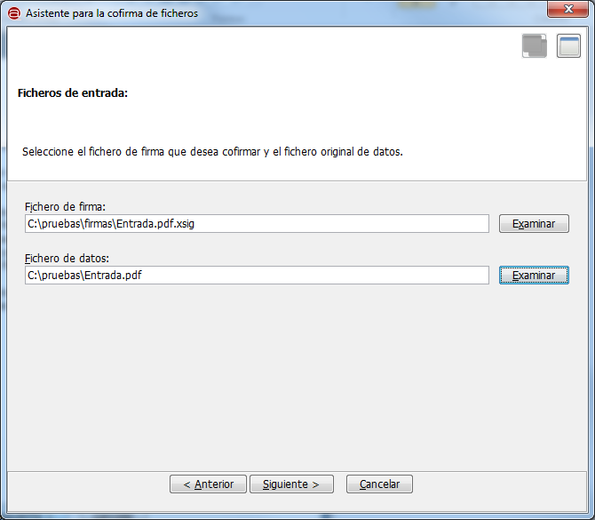

Esta opción nos mostrará un asistente para la generación de una cofirma electrónica. A lo largo de varios pasos se nos explicará en que consiste esta operación y se nos solicitarán los datos necesarios para ejecutarla:
Al pulsar el botón "Siguiente >" accederemos a la primera pantalla del asistente, en donde deberemos seleccionar el documento que deseamos firmar y el fichero con el resto de firma generadas.

Al pulsar el botón "Siguiente >" se nos mostrará un diálogo para la selección del certificado que dese utilizar para la cofirma. Seleccione el certificado deseado y a continuación se le mostrará un segundo diálogo para el guardado de la multifirma generada o, en caso de error, una ventana con el mensaje de error correspondiente.